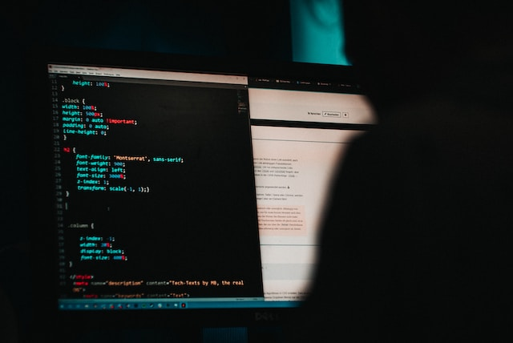

Aug 21, 2021 by Jordi Bassaganas
How to Rate-Limit a WebSocket Server
This is how I hardened a WebSocket server on Ubuntu
 Photo by Luca Bravo on UnsplashRate limiting is about implementing security policies to control how much network traffic a particular service will receive. One of its purposes is to mitigate DoS (Denial of Service) attacks by cybercriminals. It is a crucial part of any hardening strategy and can be implemented in several different layers of the OSI and TCP/IP architecture stacks.
Hardening TCP Services
The transport layer in the TCP/IP model includes three protocols: TCP, UDP and SCTP. In today's post, I'll show you the simplest possible way to rate-limit a TCP service such as HTTP, HTTPS, FTP or SMTP.
For example, you may want to block IP addresses trying to connect to a WebSocket server more than N times per minute.
Whether you're a DevOps person or a full-stack developer, probably you've heard about iptables which is a popular command line tool used to configure the Linux kernel firewall.
But iptables rules can be complicated to set up if you don’t have too much experience with Linux and TCP/IP networks.
The good news is, you don't need to be an expert system admin to configure a Linux firewall, especially if creating a sandbox server with little traffic at the beginning.
Uncomplicated Firewall Comes to the Rescue
ufw is a frontend for iptables.
Here is the simple approach that I took to harden my WebSocket server in the blink of an eye.
The Uncomplicated Firewall is already installed in Ubuntu out-of-the-box. If you're using Debian or any other Linux distro without it by default, it can be installed as described next.
$ sudo apt-get install ufw
This is how to find out the status of the firewall.
$ sudo ufw status
And this is how to enable it.
$ sudo ufw enable Firewall is active and enabled on system startup
Beware, if enabling ufw through an SSH connection the following message will pop up.
Command may disrupt existing ssh connections. Proceed with operation (y|n)?
I said yes.
Just after proceeding with the operation, I decided to close all ports by implementing a deny policy by default.
$ sudo ufw default deny Default incoming policy changed to 'deny' (be sure to update your rules accordingly)
This means Ubuntu Server won't accept any incoming connections.
$ sudo ufw status verbose Status: active Logging: on (low) Default: deny (incoming), allow (outgoing), disabled (routed) New profiles: skip
If using SSH to connect to the server it is crucial to explicitly open the SSH port so that it can be SSHed, otherwise, the existing connection will be disrupted.
$ sudo ufw allow 22/tcp Rule added Rule added (v6)
Then, put into practice the principle of least privilege. I opened port 8443 because apart from port 22 this is the only one which needs to be accessed from anywhere on the Internet.
$ sudo ufw allow 8443/tcp Rule added Rule added (v6)
By the way, it is a good idea to make sure everything is going as expected.
$ sudo ufw status verbose Status: active Logging: on (low) Default: deny (incoming), allow (outgoing), disabled (routed) New profiles: skip To Action From -- ------ ---- 22/tcp ALLOW IN Anywhere 8443/tcp ALLOW IN Anywhere 22/tcp (v6) ALLOW IN Anywhere (v6) 8443/tcp (v6) ALLOW IN Anywhere (v6)
Thus, here is how to list the actual iptables rules that the Uncomplicated Firewall will write for us newbies.
IPv4 rules:
$ sudo iptables -S
IPv6 rules:
$ sudo ip6tables -S
As said previously this works for all TCP-based services. If you were running, let's say an HTTPS server instead of a WSS server, you might want to run the following command instead.
$ sudo ufw allow 443/tcp Rule added Rule added (v6)
It is worth mentioning that if a port is opened by mistake, no problem, it can be easily closed.
$ sudo ufw delete allow 443/tcp Rule deleted Rule deleted (v6)
WSS Hardening With UFW Is Easy Peasy
ufw allows to rate-limit TCP network services as shown below.
SSH:
$ sudo ufw limit 22/tcp Rule updated Rule updated (v6)
WSS:
$ sudo ufw limit 8443/tcp Rule updated Rule updated (v6)
Firewall status:
$ sudo ufw status verbose Status: active Logging: on (low) Default: deny (incoming), allow (outgoing), disabled (routed) New profiles: skip To Action From -- ------ ---- 22/tcp LIMIT IN Anywhere 8443/tcp LIMIT IN Anywhere 22/tcp (v6) LIMIT IN Anywhere (v6) 8443/tcp (v6) LIMIT IN Anywhere (v6)
This way IP addresses trying to establish a connection to ports 22 and 8443,
6 or more times in 30 seconds, will be blocked. The user rules are automatically
written in /etc/ufw/user.rules and /etc/ufw/user6.rules.